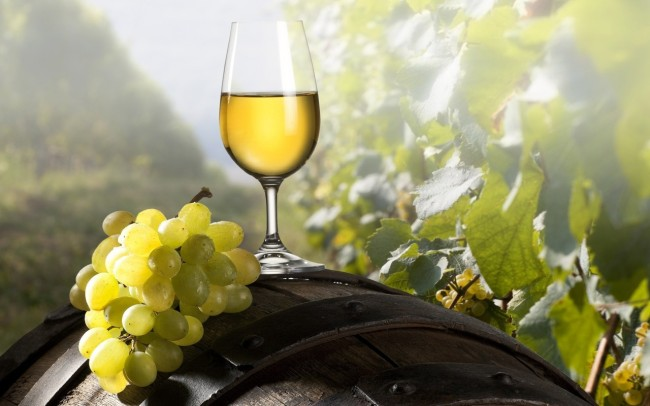
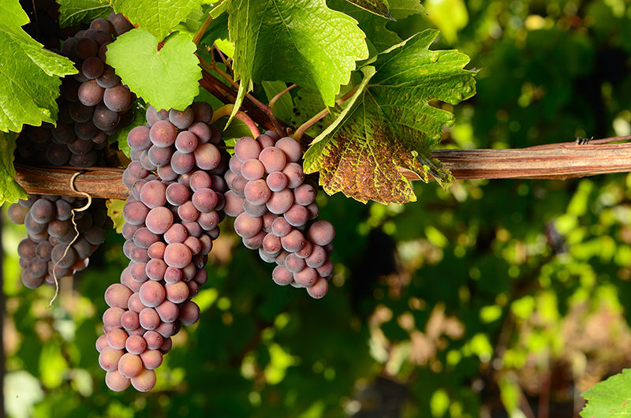
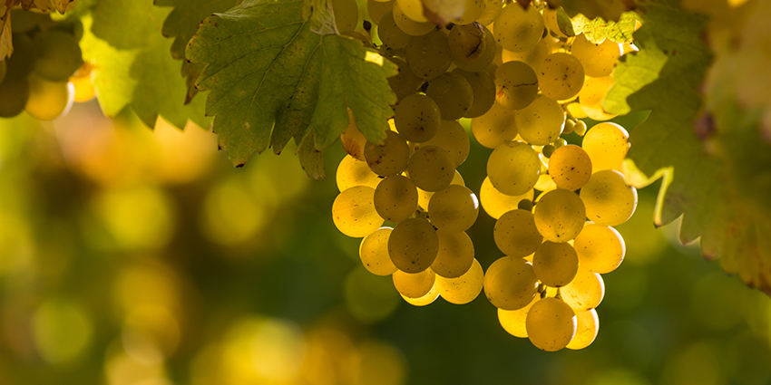
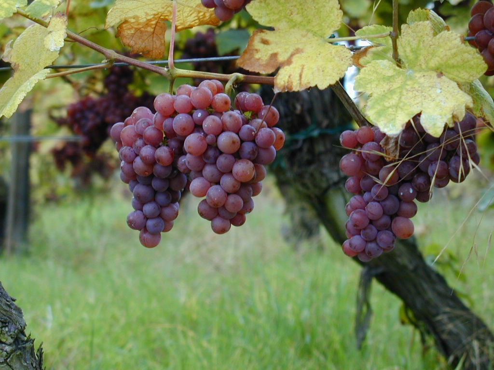

1. Chardonnay
Chardonnay este si numele soiului de struguri din care sunt produse aceste vinuri. Sunt originare din Franta, din regiunea Burgundia, dar aceiasi struguri sunt plantati acum in multe regiuni din lume, inclusiv in Romania. Vinurile tinere din acest soi de struguri au arome fructate de mar verde sau para, iar cele cu vechime, pastrate in butoaie de stejar, primesc si note de vanilie si arome placute de unt.Cel mai cunoscut in lume este tipul de vin Chardonnay sec, un vin amplu si onctuos, cu arome fructate. Dar soiul de struguri Chardonnay este atat de versatil incat este ingredient principal si pentru sampanie, iar in Romania, solul din Dobrogea l-a facut perfect si pentru vinuri albe dulci.
Chardonnay se potriveste langa feluri din carne de pui si peste, dar si langa mancaruri care au la baza smantana si unt. 
2. Sauvignon Blanc
Este unul din soiurile de vin alb cu o popularitate imensa in lume. Si acesta s-a nascut in Franta, pe Valea Loarei, dar si Noua Zeelanda produce vinuri Sauvignon Blanc excelente. In general, sunt vinuri seci cu arome de baza vegetale. Notele dominante pornesc de la cele de mar pana la unele mai tropicale cum sunt citricele. Sauvignon Blanc se potriveste langa preparate cu legume sau vegetariene, fructe de mare si peste, carnuri albe si salate.
3. Pinot Gris
Desi e un soi de vin cu vechime, italienii l-au facut de curand faimos prin varianta Pinot Grigio. Din podgoriile noastre vinurile Pinot Gris cele mai cunoscute sunt dulci sau demidulci, dar in lume e cunoscut ca un vin alb sec. Cu un gust puternic astringent, Pinot Gris este dominat de arome fructate de para, lamaie sau mar.Este un vin versatil care se potriveste cu o multime de parparate: de la bucataria asiatica si preparatele ei condimentate, pana la feluri cu carne de pui si chiar porc. 
4. Riesling
La noi e mai cunoscut Rieslingul italian, dar cel mai mare succes in lume il au vinurile Riesling produse din struguri albi cultivati in Germania, pe Valea Rinului. Aceste vinuri nemtesti au o aciditate metalica si sunt usor dulci. Sunt, insa, si varinate seci de Riesling foarte apreciate in lume. Sunt vinuri mai usoare decat cele Chardonnay, cu arome fructate si note florale.Riesling se potriveste si la aperitive si la desert, la mancaruri condimentate sau preparate din carne alba si de porc. 
5. Gewürztraminer
Sunt vinuri aromate si extrem de apreciate in lume. La noi e mai putin cunoscut, dar daca vezi o eticheta cu acest nume poti sa il cumperi cu incredere. Soiul de struguri din care sunt facute este vinuri este cultivat mai ales in Franta, in Alsacia, dar si Germania, Australia sau Noua Zeelanda. Vinurile Gewürztraminer sunt foarte aromate, cu note fructate de piersici, para, trandafir sau scortisoara.Sunt si vinuri seci, si vinuri dulci si se potrivesc langa preparate asiatice, carne de porc sau carnuri la gratar. 